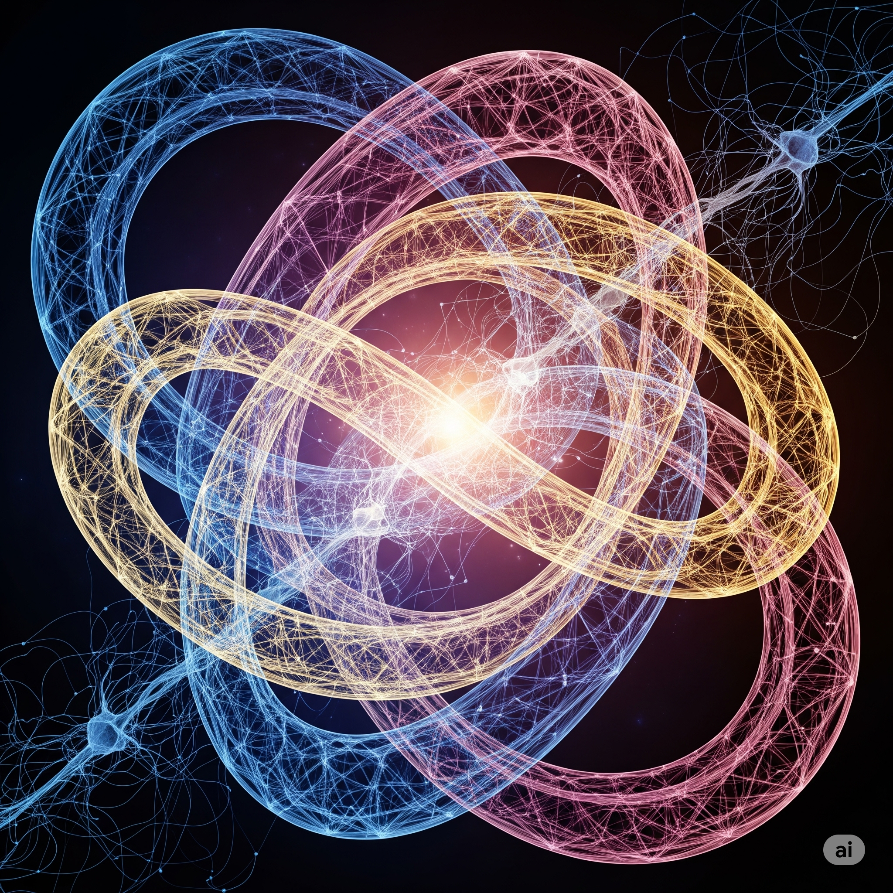

Other activities
Some of the extra-curricular mathematics-related activities I partake in.
Publications
- D. Iľkovič et al. LiveMath benchmark training set, September 2025.
- K. Rychlewicz Wierzchołki, krawędzie, ściany i dalej (in Polish), Delta, May 2020.
- K. Rychlewicz and M. Skałba Najłatwiejsze zadanie? (in Polish), Delta, May 2016.
- Co-editor (with Szymon Kanonowicz) of the brochure Matematyka elementarna: twierdzenia i zadania w uczniowskim wykonaniu (in Polish), 2015.
Other activities
Since 2014, I have been a member of the Main Committee and the Problem Selection Committee of Polish Juniors' Mathematical Olympiad. From time to time, I take part in some activities around Polish Mathematical Olympiad. I co-organized a few editions of Náboj mathematical competition and Náboj Junior in Warsaw and Łódź. I organized the online version of Czech-Austrian-Polish-Slovak Mathematical Competition in 2020, and together with my colleagues Daniel, Jakub and Shon, I co-organized the competition in ISTA in years 2022-2024.
